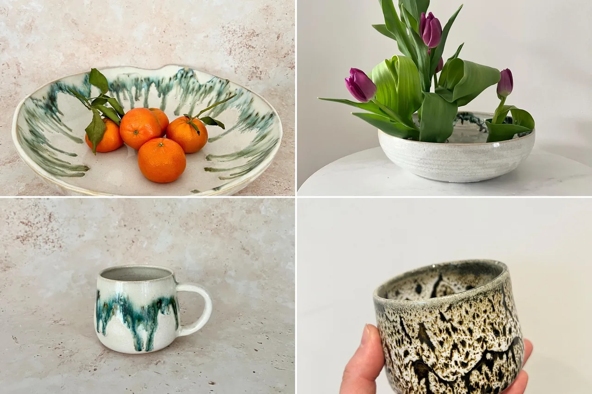
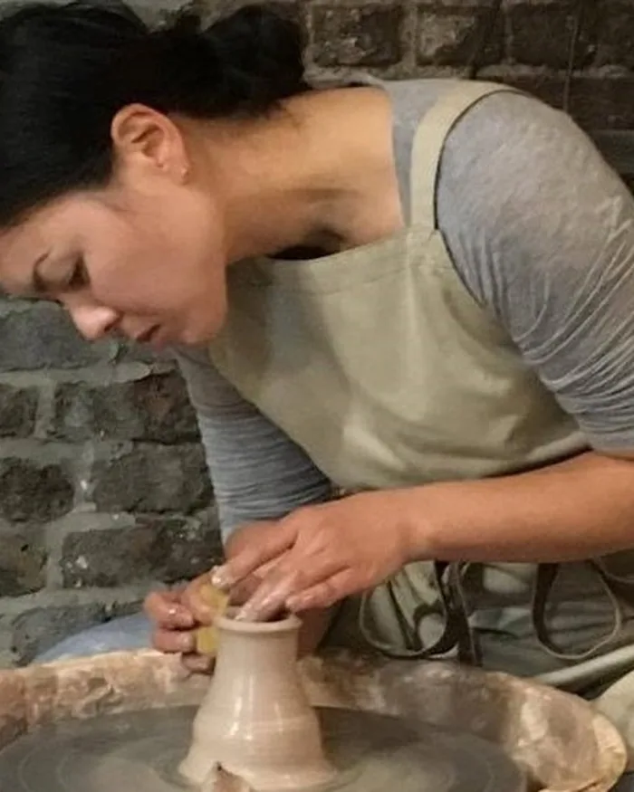
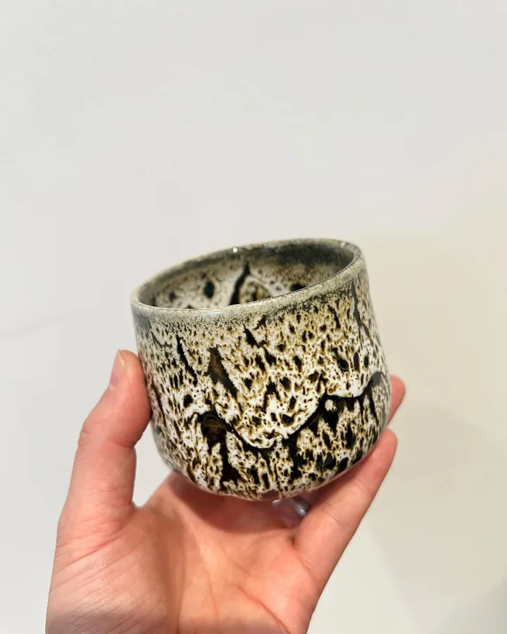
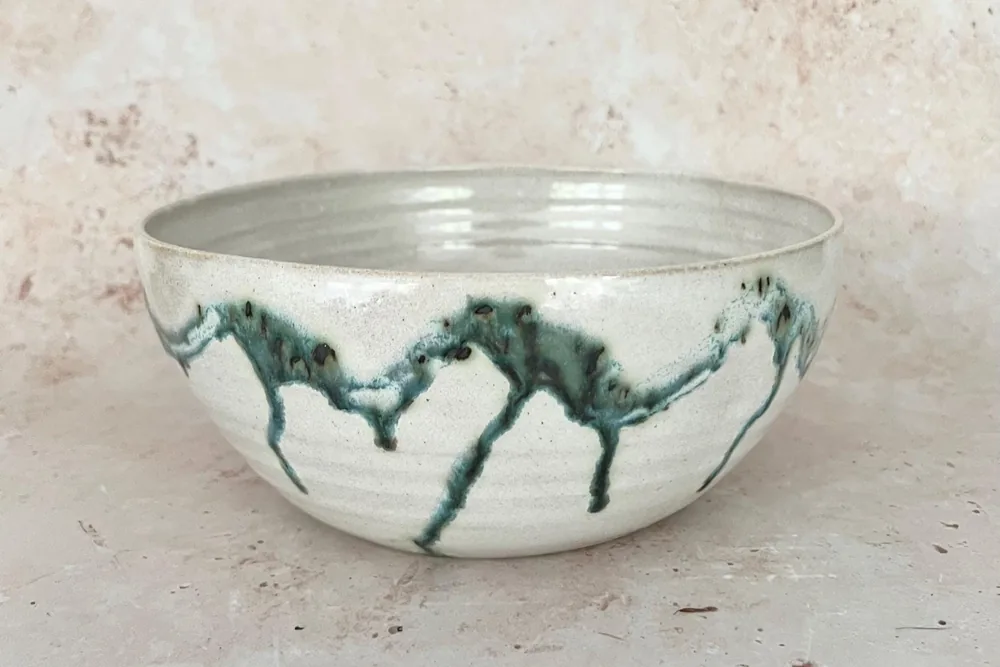
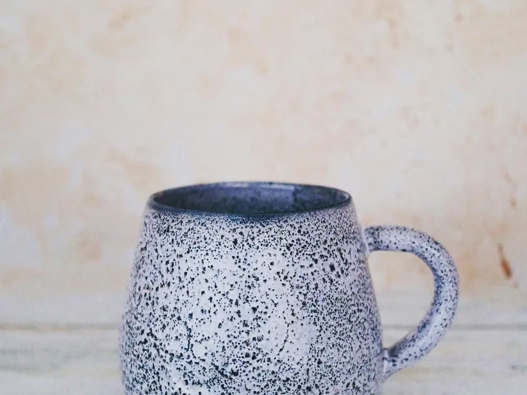
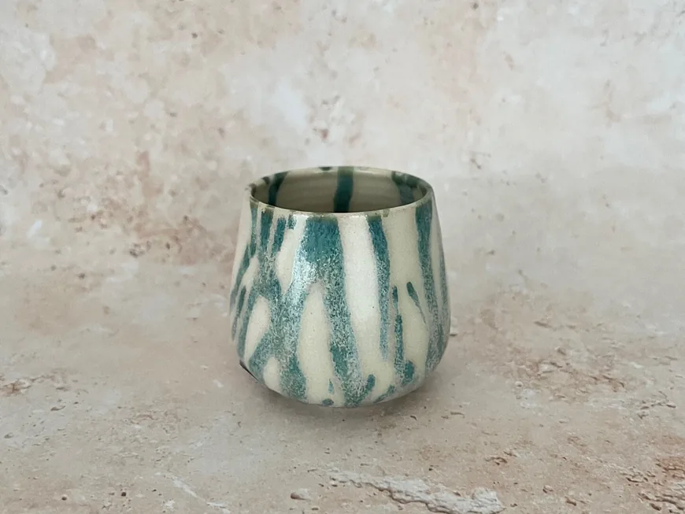
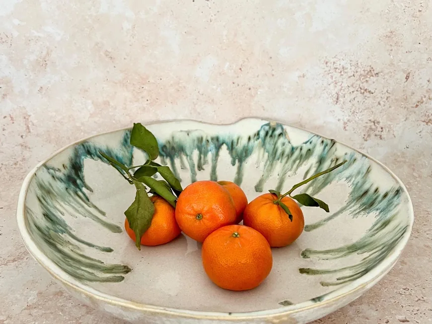
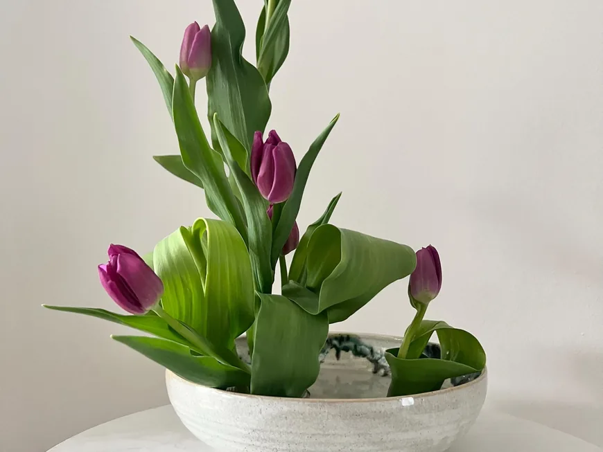

One of a kind
Gravity glazing makes every piece unique.

Japanese ceramicist · North London
Handmade ceramics, bringing nature into your home

Meet the Artist
Owner & artist of Noriko Nagaoka Ceramics
I am a Japanese ceramic artist. I make nature-inspired collections of stoneware tableware at my home studio in North London, and I enjoy using a layering glaze style and gravity to create one of a kind ceramics.
Japanese Ceramicist inspired by nature. One of a kind Handmade ceramic tableware in North London.
Our story

01 How it started
I was born in Osaka and have lived in North London for many years. In 2014 I started taking evening ceramics courses, and in 2017 I became a full-time potter, slowly developing my own designs and shapes.
In October 2019 I set up my own ceramics studio in my back garden in North Finchley. I love nature, and most of my pieces are inspired by it: trees, ocean scenery, mountains, waterfalls and animals.
One of my inspirations is the Japanese master potter Shoji Hamada. His spontaneous designs and clean shapes are what I strive to achieve in my own work.
— Noriko
02 Where & how it’s made
My work is made from Stoke-on-Trent clay, by me, in my home studio in North London.

03 What makes it special
Gravity glazing makes every piece unique.
Shapes, sizes and weights designed to make food look better.
Recycled clay, paper wrapping and reused boxes.
Reviews
What we make
Mugs, cups, bowls, plates, vases and sake sets. I also make custom tableware and teach private throwing lessons at my studio; just get in touch.

Coffee and tea mugs in her Mori (forest), Croco and Dark snow glazes.

Japanese tea cups, each glazed with gravity into a one of a kind piece.

Fruit bowls, matcha bowls and plates, made to make food look better.

Vases, sake sets and flat suiban bowls for ikebana.
Everything is sold through the online shop, with secure checkout and buyer protection.
Stay in the loop
Sign up to be the first to know about sales and new products.
You’re in! 🎉
Continue to the shopEvery piece is handmade in my garden studio in North London. Thank you for visiting!
Visit the shopFind me elsewhere